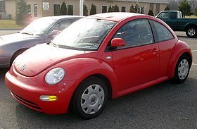

| Autos | Ubica tu consecionaria | Contacto |
|---|
Es un automóvil producido por el fabricante alemán Volkswagen desde el año 1998. El New Beetle es una reinterpretación del Volkswagen Escarabajo, con el cual no comparte elementos estructurales ni mecánicos. Se ofrece con carrocerías coupé y cabriolet/convertible de dos puertas. Su aparición en el mercado se dio en una época marcada por el lanzamiento de reinterpretaciones de otros modelos icónicos de la industria automotriz mundial, sin embargo a pesar de no estar catalogado en un segmento específico que lo ponga en rivalidad con otros modelos, comercialmente es rivalizado con el MINI reinterpretado por la alemana BMW.
